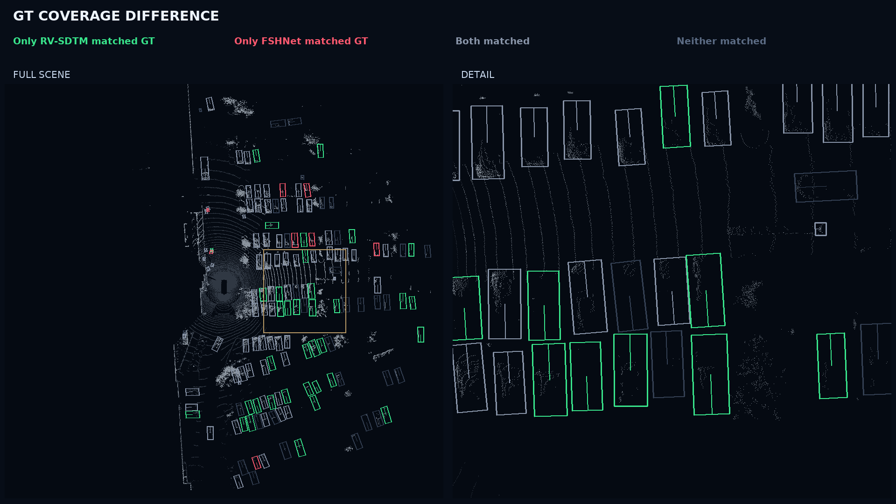

RV-SDTM × FSHNet-Light
Full-size image ↗
WAYMO · SELECTED DETECTION EXAMPLES
Range-view context meets voxel geometry. Explore RV-SDTM detections across cyclists, pedestrians, distant road users, and dense traffic.

GT geometry colored by match status in a selected dense-traffic scene. The image's “FSHNet” label means FSHNet-Light. How to read the comparison →
Blue boxes are RV-SDTM predictions. Four Waymo scenes in a 12-second bird's-eye sequence.
Class-focused scenes highlight Cyclist, Pedestrian, and Vehicle detections,
including distant road users and dense traffic.
Oblique view → low-angle replay → frozen-frame orbit → BEV replay.